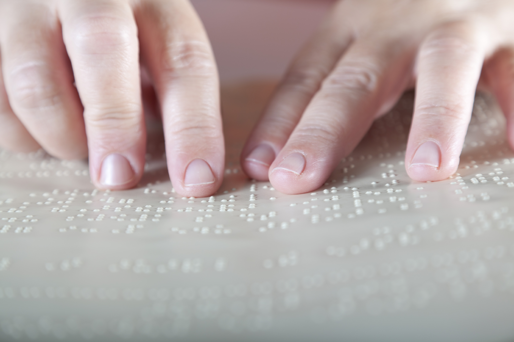

Learn More About the Braille System
Discover the importance of Braille and how this system has allowed millions of people with visual impairments to read, write, and access information independently.

1824
Year Louis Braille created the system, at just 15 years old.
64
Possible combinations from the cell's 6 dots.
100+
Countries that currently use the Braille system.
January 4
World Braille Day, honoring the birth of its creator.
Why learn Braille?
Learning about the Braille system helps us understand the needs of people with visual impairments and fosters a more inclusive society. Knowing this system also helps us value the importance of accessibility and promote equal opportunities for everyone.

Workshops
Educational activities where people learn how the Braille system works.
Tactile experiences
Demonstrations of reading words using only the sense of touch.
Technology
A showcase of keyboards and devices that use the Braille system.
"Access to communication in the broadest sense is access to knowledge, and that is of vital importance."— Louis Braille
Benefits of Awareness
Promotes social inclusion.
Facilitates access to education.
Fosters equal opportunities.
Drives the development of accessible technologies.
Strengthens respect for people with visual impairments.
Let's build a more inclusive society
Learning about the Braille system is an important step toward creating a world where everyone has the same opportunities. Inclusion begins with knowledge, respect, and empathy toward others.
Want to keep learning?
Check out the full Braille alphabet or get in touch with us if you'd like to join a workshop or ask a question.